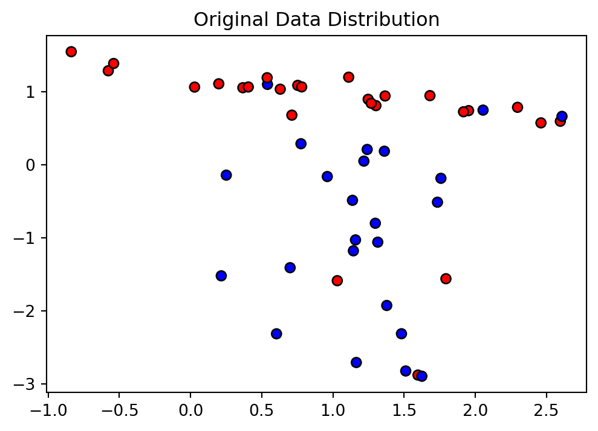

import torch
import torch.nn as nn
import torch.optim as optim
import numpy as np
import matplotlib.pyplot as plt
from sklearn.datasets import make_classification
from sklearn.model_selection import train_test_split
from sklearn.preprocessing import StandardScaler
# 随机生成数据
np.random.seed(42)
X, y = make_classification(n_samples=50, n_features=2, n_informative=2,
n_redundant=0, n_clusters_per_class=1, flip_y=0.1)
# 可视化原始数据分布
plt.figure(figsize=(6, 4))
plt.scatter(X[:, 0], X[:, 1], c=y, cmap='bwr', edgecolors='k')
plt.title("Original Data Distribution")Text(0.5, 1.0, 'Original Data Distribution')